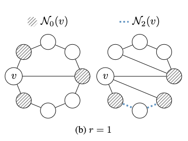
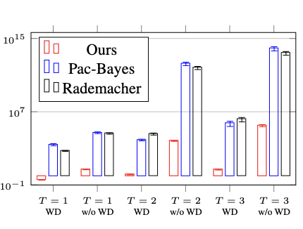
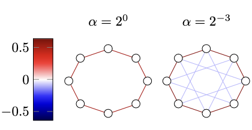
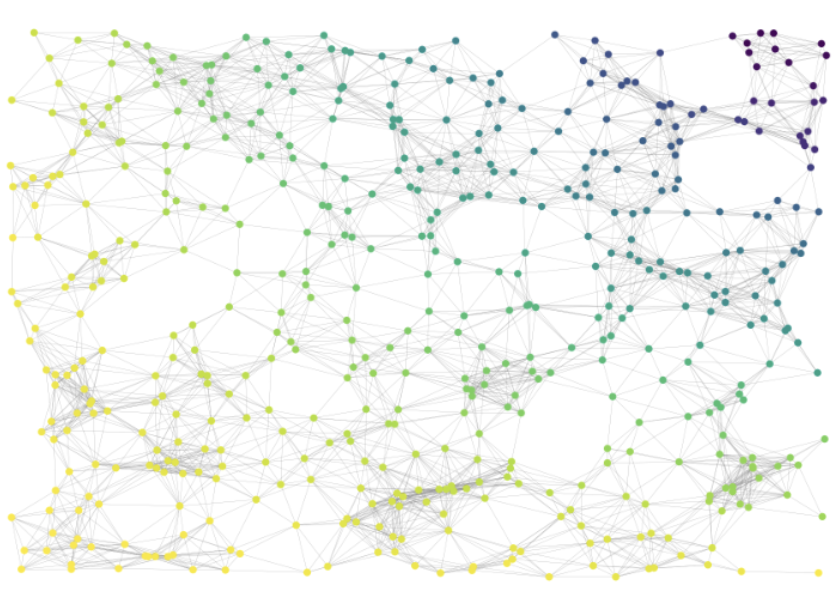
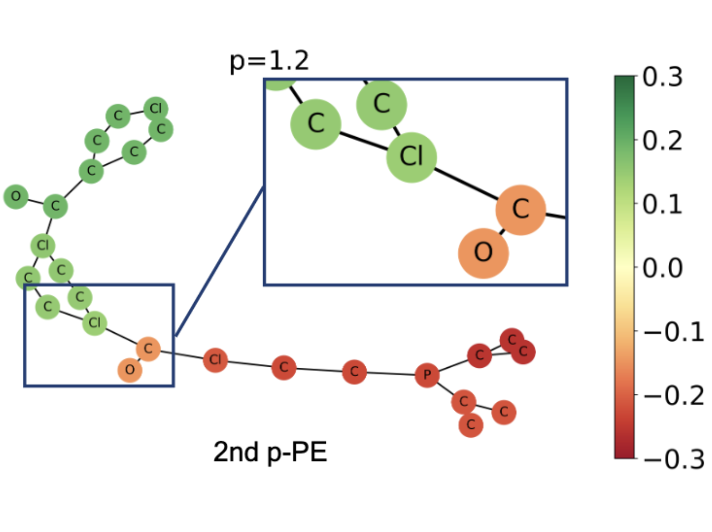
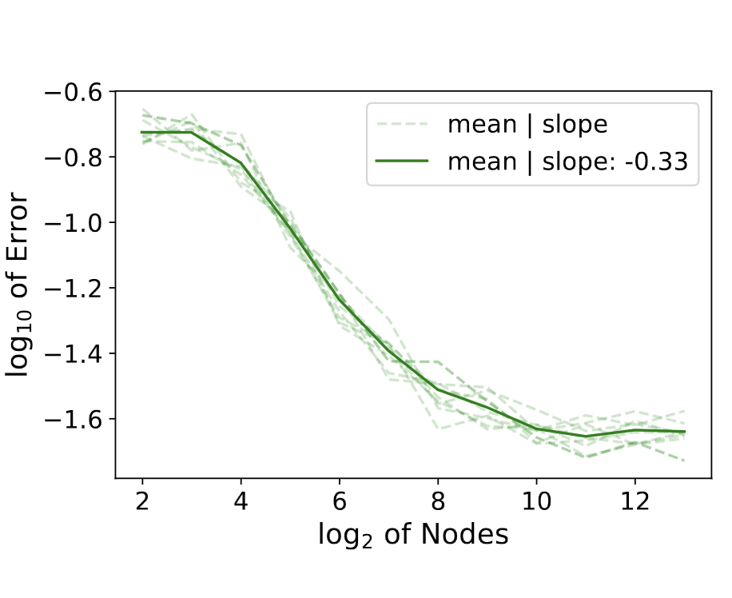

Sohir Maskey
PhD Student @ LMU Munich · Mathematical Foundations of Artificial Intelligence.
Hi there! I am a PhD Student at Ludwig-Maximilians University of Munich, focusing on the theoretical foundations and applications of geometric deep learning. My research encompasses topics such as the generalization abilities and expressivity of graph neural networks, as well as the applications of graph neural ODEs in graph representational learning. My work is supported by the NSF-Simons Research Collaborations on the Mathematical and Scientific Foundations of Deep Learning, known as MoDL.
Previously, I completed my MS in Mathematics at the Technical University of Berlin, where I wrote my thesis on the transferability of graph neural networks under the guidance of Prof. Dr. Gitta Kutyniok. I also hold a BS in Mathematics from the University of Heidelberg, with a minor in Economics.
Selected Papers
- 
-

Generalization Bounds for Message Passing Networks on Mixture of Graphons
Sohir Maskey, G. Kutyniok, R. Levie
Accepted at Journal on Mathematics of Data Science (SIMODS), 2024
- 
-

Transferability of Graph Neural Networks: an Extended Graphon Approach
Sohir Maskey, R. Levie, G. Kutyniok
Applied and Computational Harmonic Analysis, 2023
-

Generalization Analysis of Message Passing Neural Networks on Large Random Graphs
Sohir Maskey*, R. Levie*, Y. Lee, G. Kutyniok
NeurIPS 2022
-

Generalized Laplacian Positional Encoding for Graph Representation Learning
Sohir Maskey*, A. Parviz*, M. Thiessen, H. Stärk, Y. Sadikaj, H. Maron
NeurIPS Workshop on Symmetry and Geometry in Neural Representations, 2022
-

Stability and Generalization Capabilities of Message Passing Graph Neural Networks
Sohir Maskey, Y. Lee, R. Levie, G. Kutyniok
arXiv preprint arXiv:2202.00645, 2022
News
I visited the chair of Prof. Soledad Villar at JHU. I gave a talk about A Fractional Graph Laplacian Approach to Oversmoothing.
I was selected as a top reviewer at NeurIPS. Thank you for the free registration!
Our paper on A Fractional Graph Laplacian Approach to Oversmoothing has been accepted as an oral presentation at MLG@ECMLPKDD 2023!
I participated in a research project on p-Laplacian based positional encodings for GNNs at the London Geometry and Machine Learning Summer School. The paper was accepted to the NeurReps workshop at NeurIPS 2022.
I participated in the Workshop on Interpretability, safety, and security in AI at Isaac Newton Institute for Mathematical Sciences, University of Cambridge.
I participated in the Workshop on Deep learning and partial differential equations at Isaac Newton Institute for Mathematical Sciences, University of Cambridge.